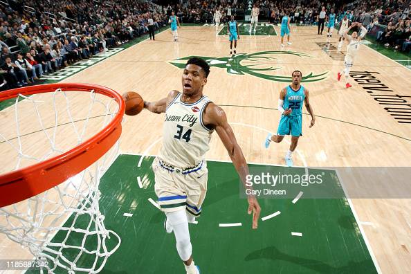

My favorite hooper is...
Tough, Long, and Verastile
Giannis Anetokounmpo, born Decemeber 6th, 1994, is a Greek professional basketball player in the NBA for the Milwaukee Bucks. Due to his nationality and size, speed, strength, and ball handling skills he has been nicknamed "The Greek Freek". Antetokounmpo has quickly become one of the most decorated players in the NBA, already holding 2 NBA Most Valuable Player awards, 1 Championship, 1 Finals MVP, and a Defensive player of the year award. He joined all-time greats Michael Jordan (1988) and Hakeem Olajuwon (1994) as the only players to be named both MVP and DPOY in the same year. He was also slected to the NBA 75th Anniversary Team.
Bio by Trey Lawrence
